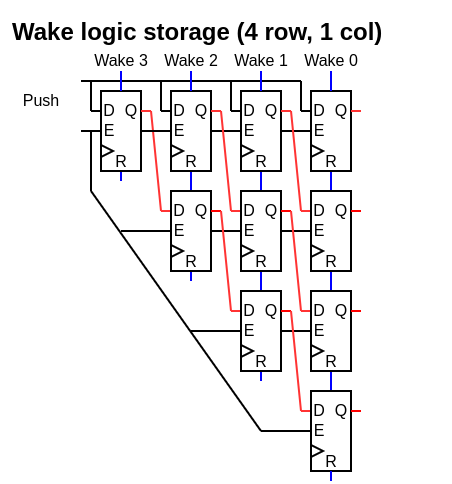
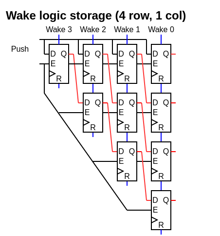

Frontend¶
Decoder¶
Nothing particular.
Physical register allocation¶
This is done by implementing a circular buffer containing the indexes of unallocated physical register. This fit well in FPGA with distributed ram.
Architectural to physical¶
The translation from architectural register file to physical is done by implementing three tables :
Speculative mapping : Translate from architectural to physical, updated after the instruction decoding, implemented in distributed ram
Commited mapping : Translate from architectural to physical, updated after the instruction commit, implemented in distributed ram
Location : Translate from architectural to which mapping should be used (speculative or commited), implemented as register (need to be cleared on branch missprediction)
This allows to revert the state of the translation instantly when the pipeline did a wrong branch prediction.
Physical to ROB ID¶
Once the physical register file of the depedencies is calculated, they are translated into the ROB ID on which it depends. This is done by two things :
ROB Mapping : A distributed ram which translate from physical to ROB ID
Busy : Which specify if the given ROB ID is still executing. It is set when a instruction is dispatched, cleared when the a instruction complete.
Dispatch / Issue¶
Here is a few specific points about the current implementation :
Unified design : Mostly to save area / having the most usage of each entries
2D queue : The entries arranged in C=decodeCount columns L=slotCount/decodeCount rows
Row push : When something is pushed in the queue, a whole row is “consumed”, even if the row isn’t fully used
No compression : There is no compression for empty rows. The while queue is shifted by one row on each push. It allows a better inferation of the matrix FF and a smaller/faster ROB ID wake logic.
Matrix based : The storage of which instruction depend on what is done as a half matrix
Older first : If multiple instruction can be dispatched at once on a given execution unit, the older one is selected
Wake by ROB ID : For dynamic wakes, the ROB ID is used as identifier (not the physical register file ID)
So, overall, a 32 slots queue seems a limite to not go beyond to preserve the timings. Also, with the current design, the area occupancy of the queue doesn’t seems to be a big deal compared to the CPU as a whole.
Here are a few illustrations :

 
